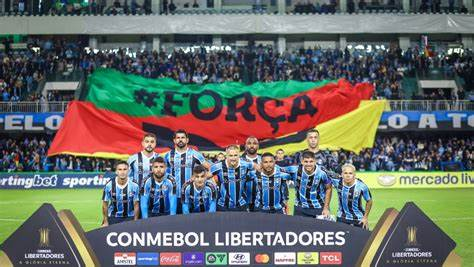
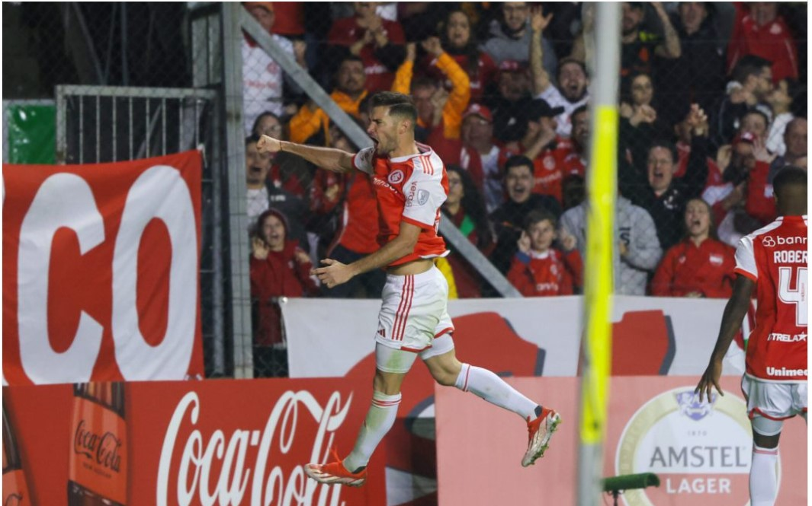
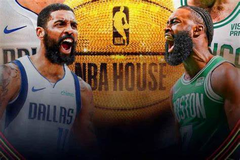

FUTEBOL
BRASIL
O confronto entre
Grêmio e Estudiantes na noite de sábado,
pela fase de grupos da Conmebol Libertadores, atraiu 32,5 mil torcedores ao estádio Couto Pereira, em
Curitiba. Este é o maior público registrado no estádio em 2024.O bom momento da equipe de Renato e a
semelhança do Couto Pereira com o saudoso estádio Olímpico resultaram em um estádio lotado na noite de
sábado. A tendência é que o Grêmio realize mais partidas em Curitiba durante o Brasileirão, incluindo o
clássico Gre-Nal.
Com o empate contra o Estudiantes, o Grêmio garantiu a classificação para as oitavas de final na segunda
posição do Grupo C e enfrentará o atual campeão, Fluminense. O jogo de ida será com mando do time gaúcho e a
volta acontecerá no Maracanã. O The Strongest terminou em primeiro lugar e enfrentará o Peñarol.
A classificação do
Internacional na Sul-Americana foi repleta de emoção. O Colorado teve o controle do jogo, mas encontrou
dificuldades para converter suas finalizações, vencendo o Delfín, do Equador, por 1 a 0, no sábado (8), no
Estádio Alfredo Jaconi, em Caxias do Sul. O gol decisivo foi marcado pelo centroavante Alario. Com essa
vitória, o Inter assegurou sua vaga nos playoffs da competição e enfrentará o Rosário Central, da Argentina.
BASQUETE
FINAIS DA NBA: BOSTON CELTICS X DALLAS MAVERICKS
Boston Celtics e Dallas Mavericks estão na disputa pela grande final da NBA da temporada 2023/24. As duas equipes conquistaram os títulos das Conferências Leste e Oeste, respectivamente, e uma delas será coroada campeã. Os Celtics tiveram a melhor campanha na Conferência Leste - e de toda a temporada regular - com um recorde de 64 vitórias e 18 derrotas. Por outro lado, o Dallas Mavericks terminou a temporada regular na quinta posição da Conferência Oeste, com 50 vitórias e 32 derrotas. Nos confrontos diretos durante a temporada regular, os Celtics levaram a melhor, vencendo os dois jogos: 119 a 110 em 22 de janeiro; e 138 a 110 em 1º de março.